Product concept · Interaction design · Prototype · Oct 2026
Idea to Edit
Turn one idea into a video you can keep editing. A feature concept for CapCut: a sentence or a photo becomes an editable project, and when one part feels wrong you fix that part — by emotion, or by marking a few clips.
Unofficial concept. Not affiliated with ByteDance or CapCut. Stock footage; AI generation is simulated.
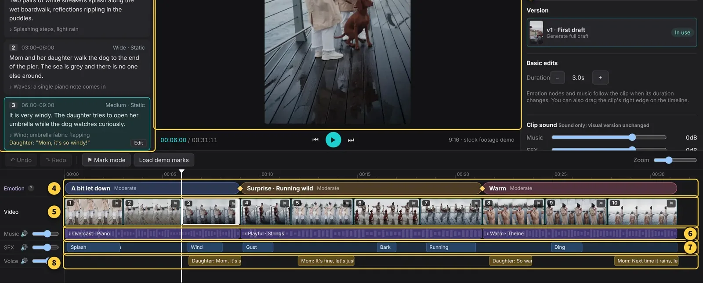
In 30 seconds
- My role
- Solo, 5 days: research, strategy, interaction design, interactive prototype, demo film
- The question
- How should AI video generation live inside an editor people already use? Starting point: one idea in, a finished piece out
- The reframe
- “One-click video” already exists. People give up after generation, when fixing one part means regenerating everything.
- The answer
- Generate straight into an editable timeline; revise by emotion node or by marking clips; every version kept
- Product strategy
- Journey mapping
- Interaction design
- AI product design
- Prototyping
- Feasibility & metrics
One sentence in, an editable project out. Then fix only what bothers you.
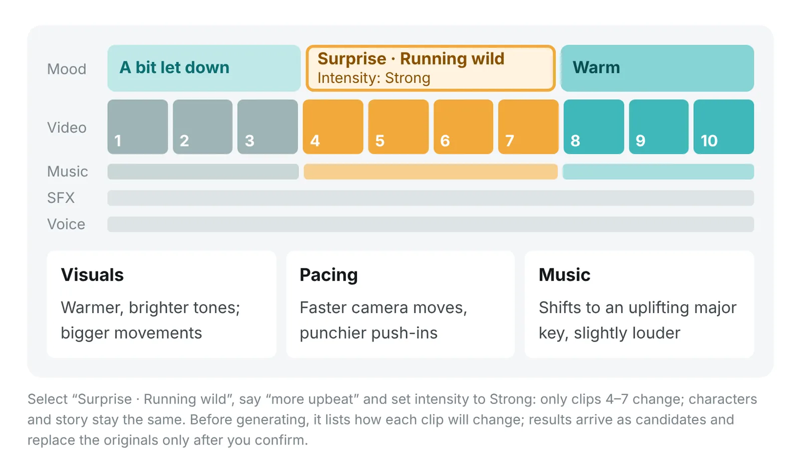
Fix by emotion“This part should feel more upbeat.” The timeline carries emotion as editable nodes; the system says what it will change before it generates anything.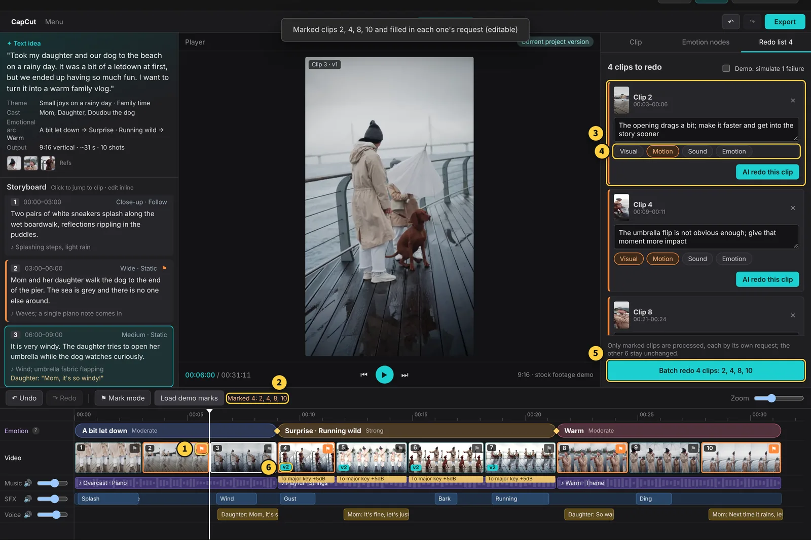
Fix by clip“Clips 2 and 4 are off.” Mark them, describe each problem, redo them together. Everything else stays, and every version is kept.Not a better generator. A better “after”.
CapCut can already turn a script into a video, and several apps generate storyboards from a sentence. While researching I noticed that creators rarely give up at the first generation. They give up afterwards: one part feels wrong, the only option is to regenerate everything, and the parts they liked change too. So I designed for what happens after generation: the output is a CapCut project with every track separate, and revision is local.
What users say vs. what they mean
I started from one concrete prompt a parent might type after a weekend trip:
“Took my daughter and our dog to the beach on a rainy day. It was a bit of a letdown at first, but we ended up having so much fun. I want to turn it into a warm family vlog.”
It looks clear, but it contains three layers, and people can express each layer very differently.
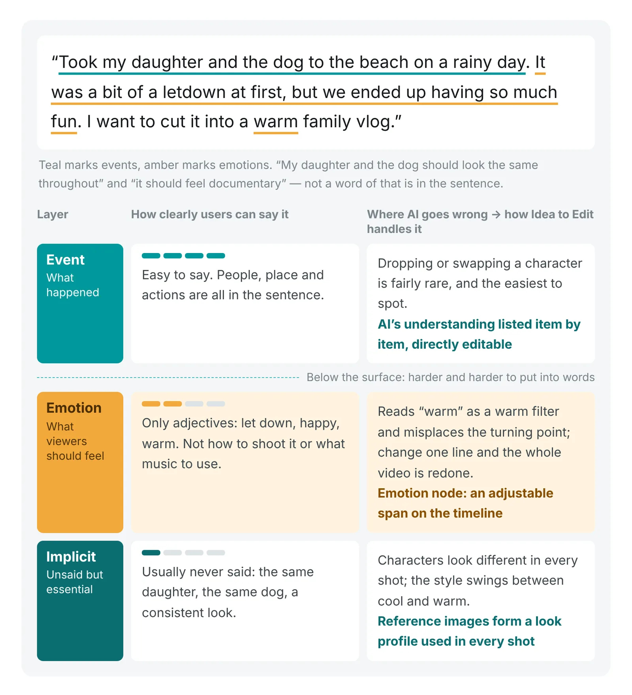
Three layers inside one prompt: events, emotion, defaults
- Events(who, where, what) are easy to say, and AI rarely gets them wrong.
- Emotion(“a letdown”, “warm”) is the real point, but users only have adjectives. They can’t describe shots, pacing or music. This is where AI misreads most: “warm” becomes an orange filter.
- Defaults(“same daughter and dog in every shot”, “documentary feel”) are never said at all, so they’re the easiest to break.
Each layer gets its own design answer: show AI’s understanding so events can be checked; turn emotion into something editable on the timeline; lock appearance with reference images.
Three kinds of users, one shared gap
- Young creatorshave ideas but no storyboard skills. They need to see what AI understood before committing.
- Designerscare about control: keep the subject, type and layout intact while adding motion.
- Short-video creatorspublish often. Their typical feedback is “the draft is fine, just clips 2 and 4 are off”. Their biggest cost isn’t the first generation, it’s rework.
None of them lacks a starting point. What’s missing is the path from a first draft to “this feels right”.
The journey: the lowest point is revision
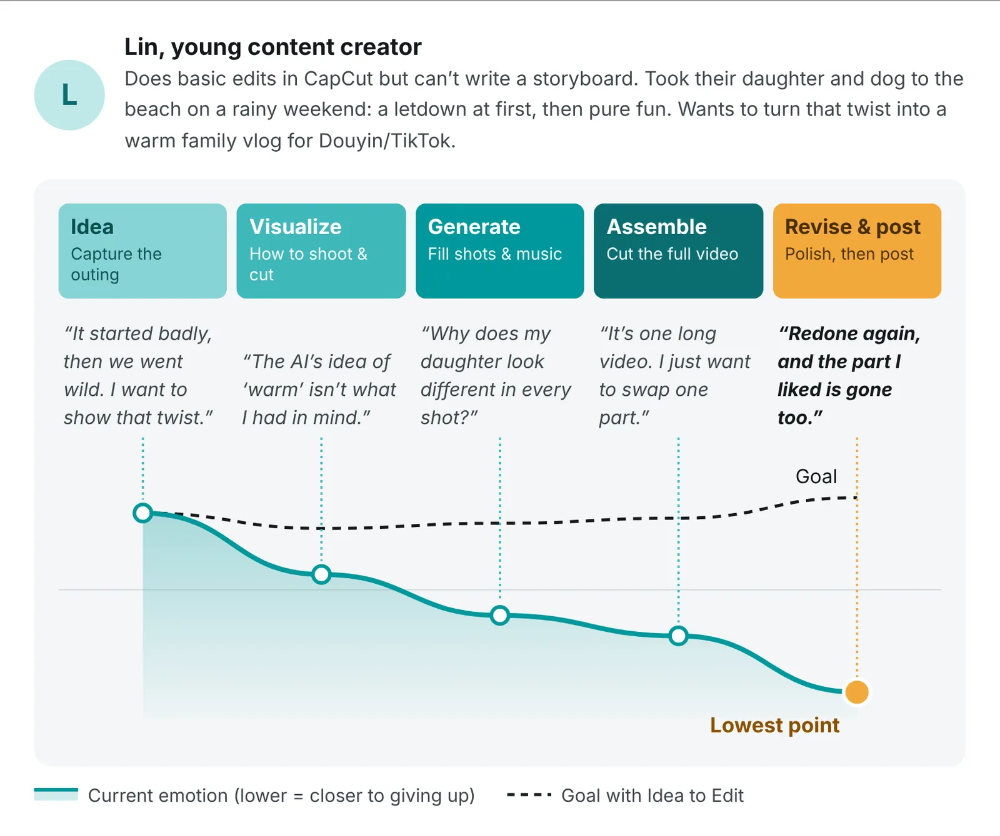
Journey map, part 1: stages, quotes and the emotion curve
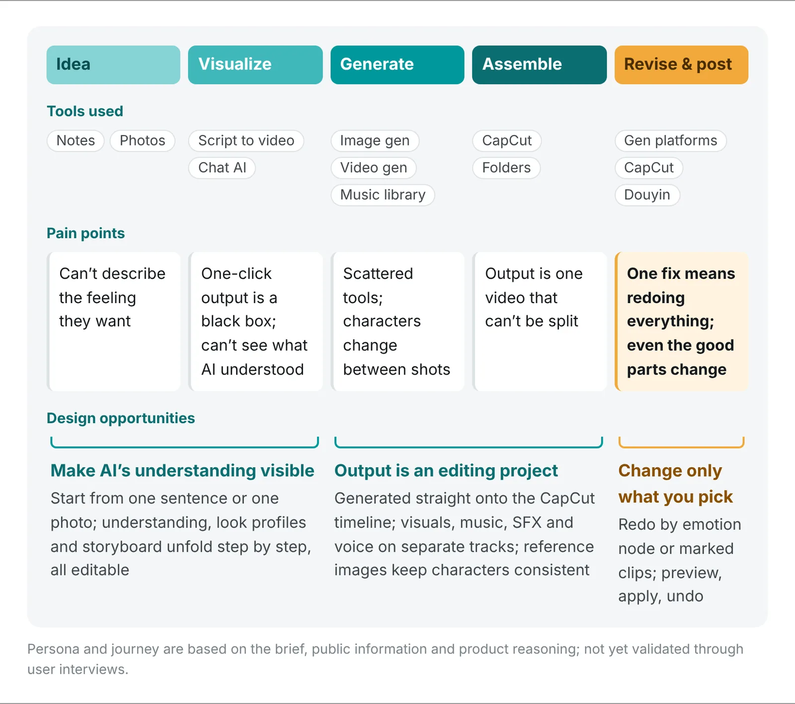
Journey map, part 2: tools, pain points and opportunities
Mapping the end-to-end journey made two problems visible. Tools are scattered: storyboard, generation, music and editing all happen in different apps. And emotion keeps dropping, hitting bottom at the revision step: “I regenerated it again and lost the part I already liked.”
That’s why I focused the design on revision, making it predictable (tell me what you’ll change first), local (only touch what I selected) and reversible (every version is kept).
Choosing the direction
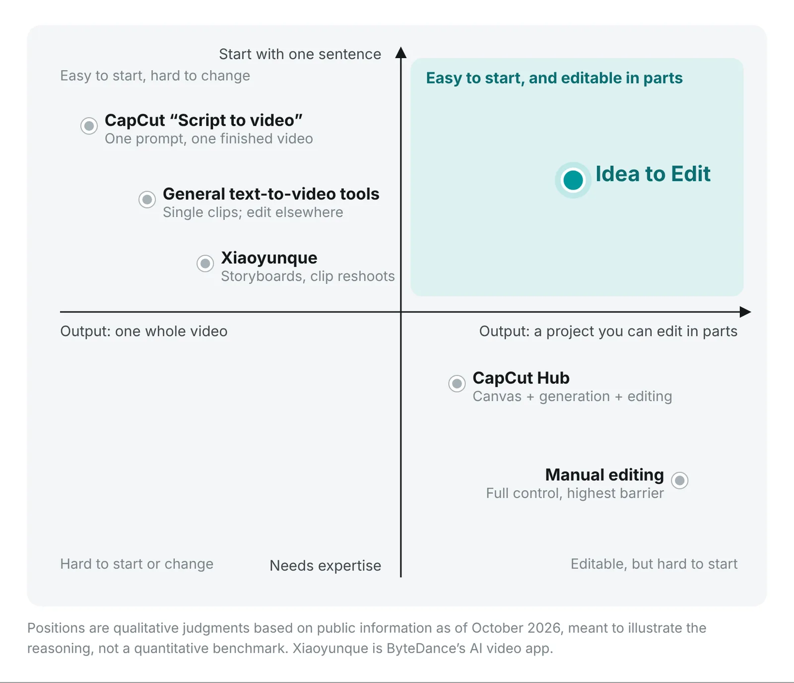
Positioning: easy to start vs. easy to edit locally
Mapping existing tools by “how much expertise you need to start” and “can you edit the result locally” shows a gap. Tools that are easy to start produce a single, uneditable video; tools that are editable need professional skills. The top-right — start with one sentence, and still edit any part — wasn’t well served.
Three candidates, I chose the first
Principles I set for myself
- Draft first, then edit.No forms before generation. One sentence gets you a full draft; refining is optional.
- Generate into the timeline.The output is a project, not a download link. Every track stays separate.
- Change only what you touch.Manual edits are never silently overwritten; redo applies only to selected clips; AI changes arrive as candidates.
- Don’t fake precision.Emotion nodes express the creator’s intent, not a measurement of the viewer, so there is no “emotion accuracy score”.
How it works
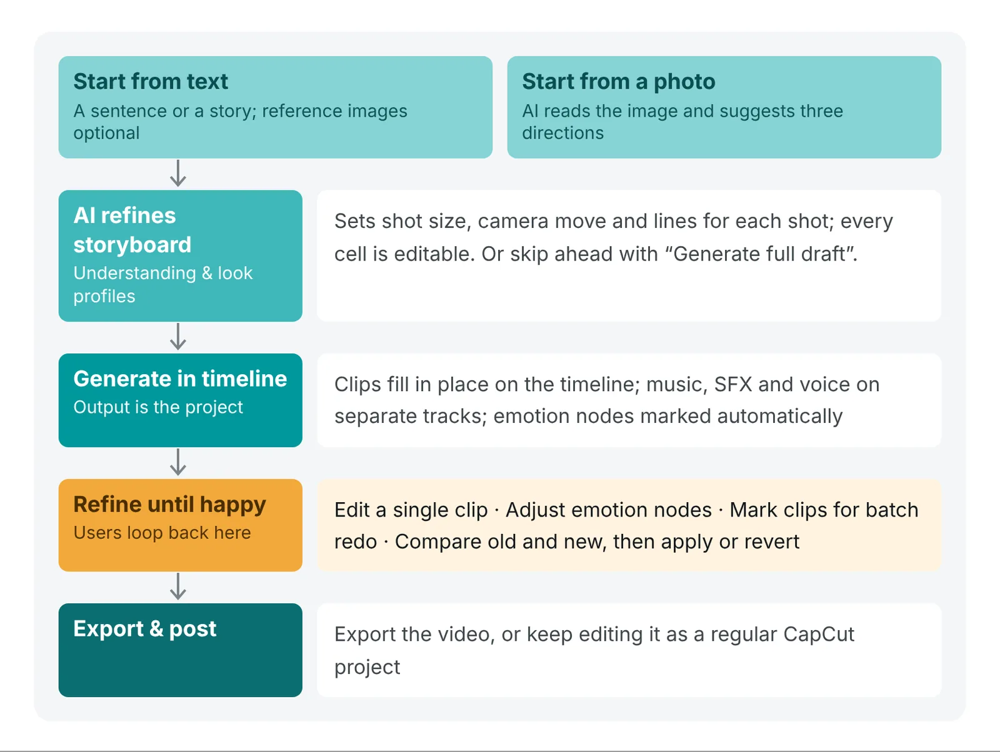
Two entry points into one editable timeline
Start from a sentence or a photo
The entry sits under “New project” on the CapCut home screen: text on the left, photo on the right. Text accepts a sentence to a full script, with an optional reference image to lock a look. Two buttons: generate a full draft, or refine the storyboard first.
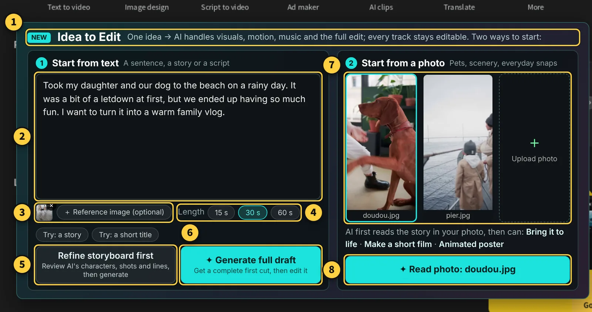
Home entry: text on the left, photo on the right
- 1New entry “Idea to Edit”: one idea → an editable video
- 2Start from text: a sentence, story or script
- 3Optional reference: lock a look or style
- 4Duration
- 5Refine storyboard first: edit, then generate
- 6Generate full draft: straight to a first cut
- 7Start from a photo: pick a sample or upload
- 8AI reads the photo, then suggests directions
Show what AI understood
Instead of a spinner, AI lays out its understanding step by step: theme, cast, emotional arc, output format, then characters with reference images, then the storyboard row by row. Misunderstandings are cheapest to catch here, and the wait becomes useful.
See the understanding screen
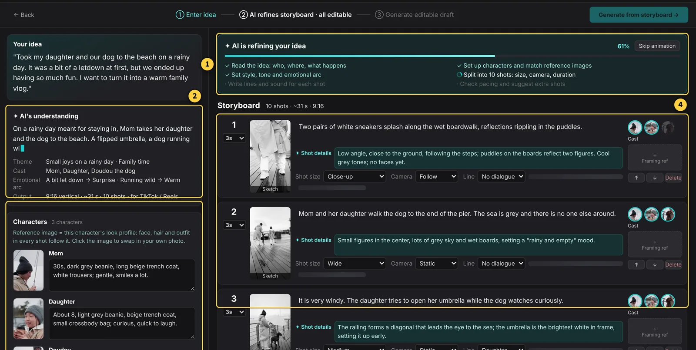
AI lays out its understanding: summary, theme, cast, emotional arc, then the characters
- 1Visible progress: 6 steps, one by one
- 2AI’s understanding: summary, theme, cast, emotional arc
- 3Characters appear as the steps complete
- 4Storyboard fills in row by row
Every cell of the storyboard is editable
Every cell is editable: description, shot size, camera, dialogue and speaker, cast (which brings their reference images), framing reference. AI can also suggest a missing shot and explain why.
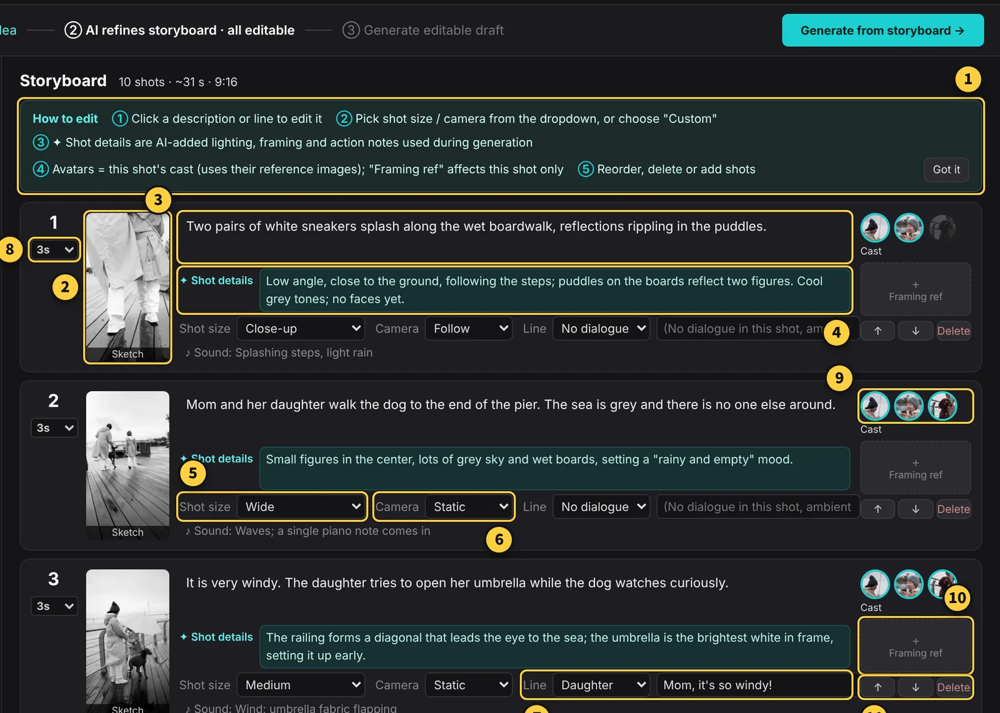
Storyboard: every cell is editable
- 1“How to edit” tips stay visible
- 2Sketch
- 3Shot description: edit directly
- 4Shot details added by AI (light / framing / action)
- 5Shot size: pick or custom
- 6Camera
- 7Dialogue + speaker
- 8Duration
- 9Cast (with reference images)
- 10Framing reference
- 11Reorder / delete
Generated straight into the timeline
Clips fill the timeline in place. The result is a CapCut project with emotion, video, music, SFX and voice tracks, with no download-and-re-import step. On top of CapCut’s existing layout I added only one emotion track and three panels, so current users don’t have to relearn anything.
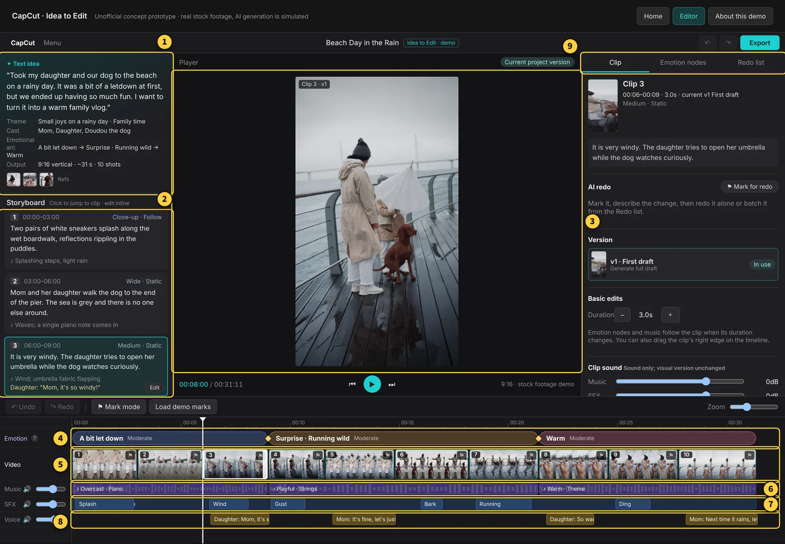
Editor overview: script left, preview centre, tracks below, three panels right
- 1Your idea + AI understanding + refs
- 2Script: click a line, preview and timeline jump there
- 3Full draft preview (with captions)
- 4Emotion track
- 5Video clips (numbered like the script)
- 6Music
- 7SFX
- 8Voice / dialogue: each track separate
- 9Clip / Emotion nodes / Redo list
Fix by emotion: emotion nodes
This is the core idea. The hardest thing for users to express, emotion, becomes a visible, editable object on the timeline. The film is split into beats (“A bit let down → Surprise · Running wild → Warm”), each with a feeling, a range and an intensity.
Emotion nodes on the timeline
Say “more upbeat” at strong intensity for the middle beat. Before generating anything, the system lists how each clip will change — brighter, warmer, bigger movement, music shifting to a major key — and keeps characters and story unchanged. Results arrive as candidates to preview, not overwrites.
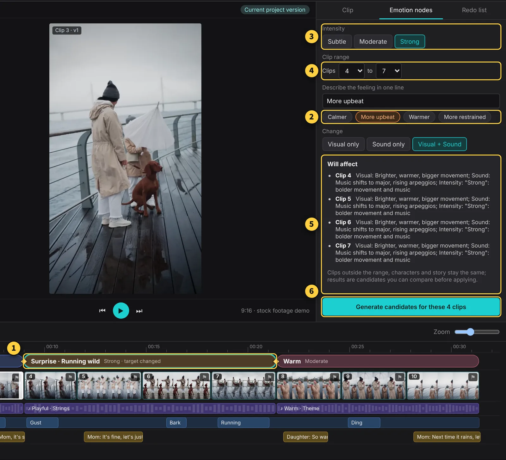
Adjusting an emotion node, with an impact preview before anything is generated
- 1Selected emotion node
- 2One line or a preset: More upbeat
- 3Intensity: Subtle / Moderate / Strong
- 4Which clips it affects
- 5Shows how each clip will change first
- 6Generate candidates (doesn’t overwrite)
“Tell me what you’ll change first” turns revision from a lottery into a decision.
Fix by clip: mark and batch redo
Sometimes the emotion is fine and only a few shots are off. Users mark any clips (2, 4, 8, 10), describe each problem, and redo them in one batch. Each clip shows its own status; a failed clip is retried alone; old and new versions are compared side by side; every version is kept for undo.
Mark the clips you dislike, describe each problem, redo them in one batch
- 1Mark the clips you dislike (any order)
- 2Marked 2, 4, 8, 10
- 3Describe each problem
- 4What to change: visual / motion / sound / emotion
- 5Batch redo; other clips stay
- 6v2: emotion tweak applied
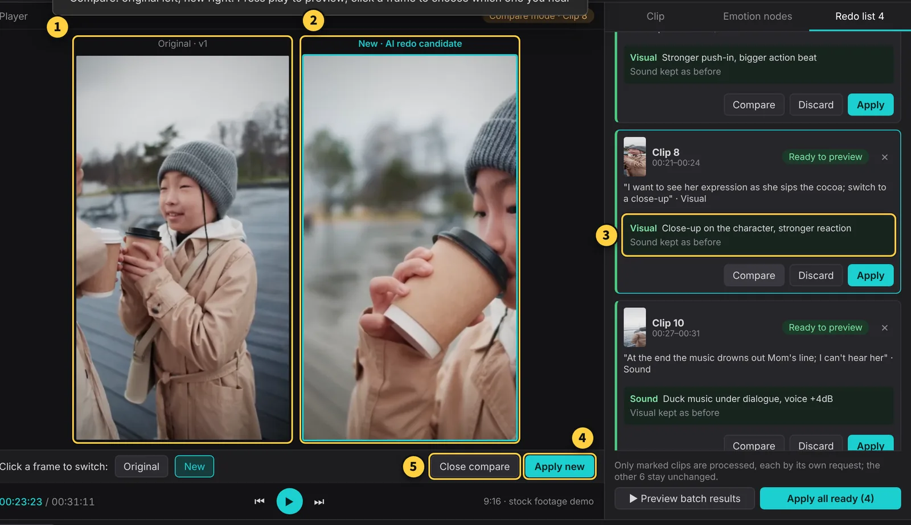
Compare old and new; AI explains what changed and what didn’t
- 1Original
- 2New: now a close-up
- 3AI explains what changed and what didn’t
- 4Apply new
- 5Or close compare
Two details: retrying a failed clip, and the version history
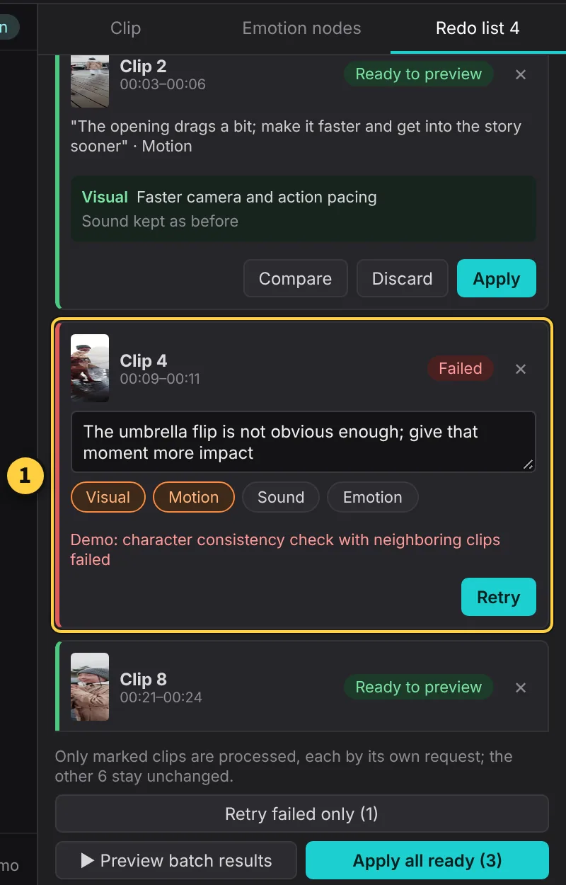
A failed clip is retried alone; finished ones stay
- 1Retry only the failed clip
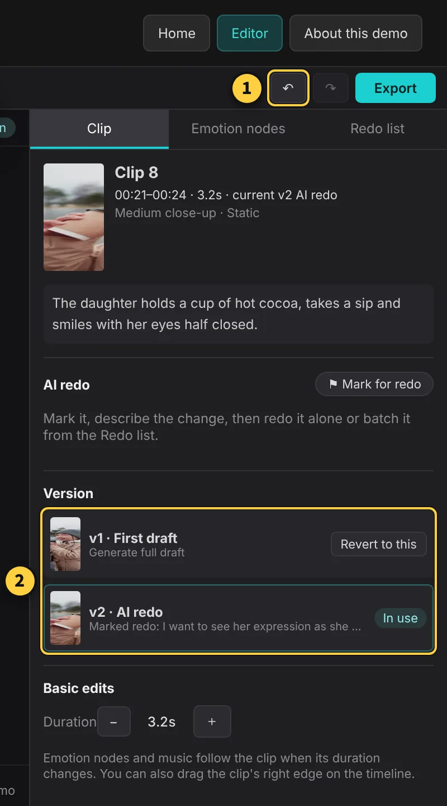
Every version is kept; revert any time
- 1Undo / redo
- 2Every version kept; revert any time
Local redo is also cheaper: regenerating 4 of 10 clips costs about 40% of a full re-run. And not every fix needs AI. The clip panel also offers ordinary edits — duration, per-clip music and voice levels, ducking under dialogue — so problems that ordinary editing can solve never trigger a regeneration.
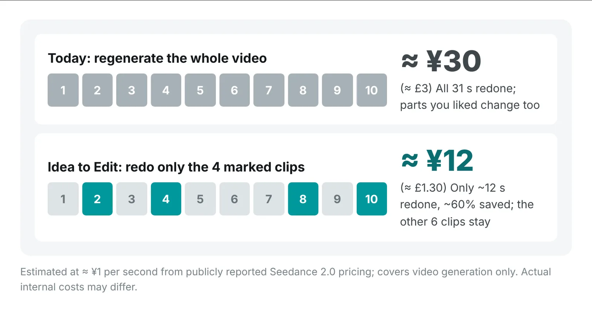
Cost: full regeneration vs. local redo
Start from a photo
For designers and people who only have a photo: AI reads the image (subject, light, mood, framing, a story worth telling) and offers three directions. Bring it to life keeps the photo as the first frame; Make it the star of a short film uses the photo as the lead’s reference image; Animated poster adds a slow push and typeset titles, so the text is never redrawn by the model.
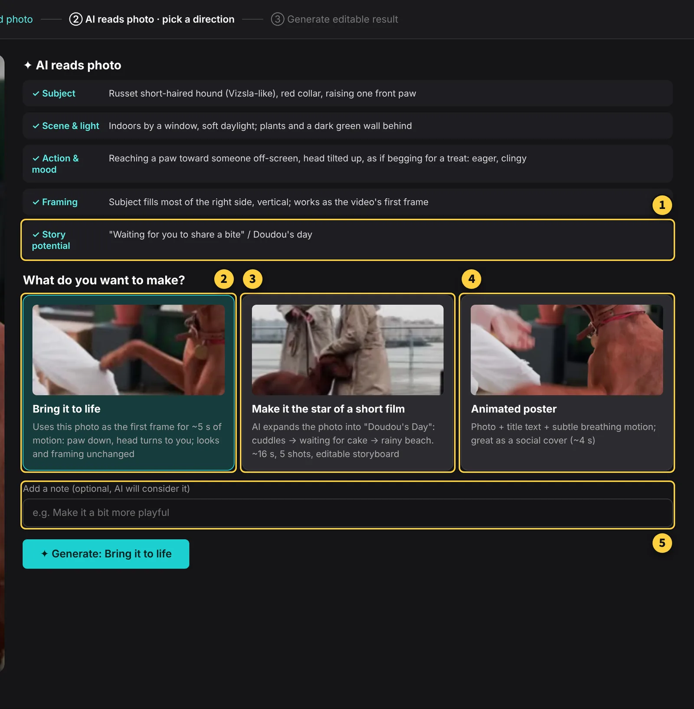
Photo entry: AI reads the photo, then offers three directions
- 1Finds a story to tell
- 2Bring it to life
- 3Make it the star of a short film
- 4Animated poster
- 5Add a note (optional)
See the three photo directions
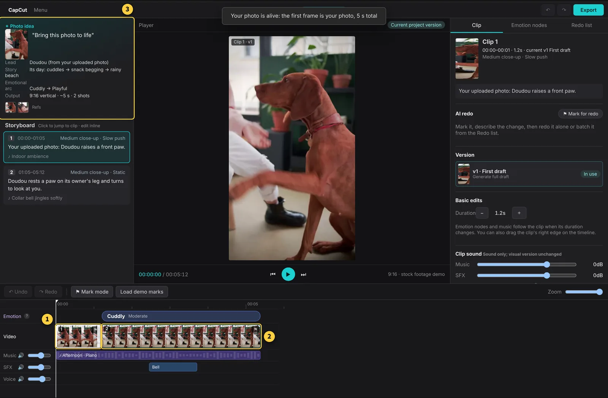
Bring it to life: clip 1 is the photo, clip 2 continues from it
- 1Clip 1 = your photo (first frame unchanged)
- 2Clip 2 = motion continuing from the photo
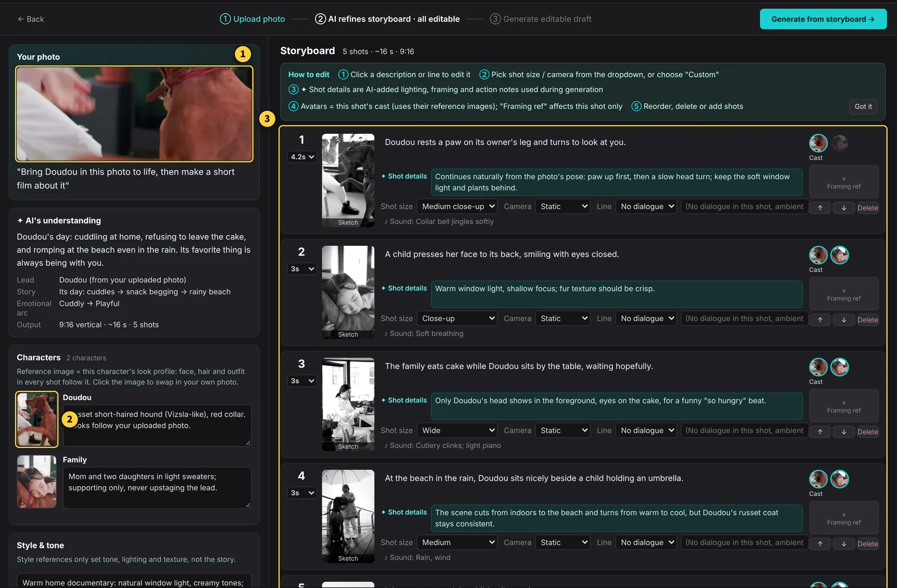
Star of a short film: the photo becomes the lead’s reference image, five shots extended by AI
- 1Uploaded photo
- 2Photo becomes the lead’s reference image
- 35 shots extended by AI, all editable
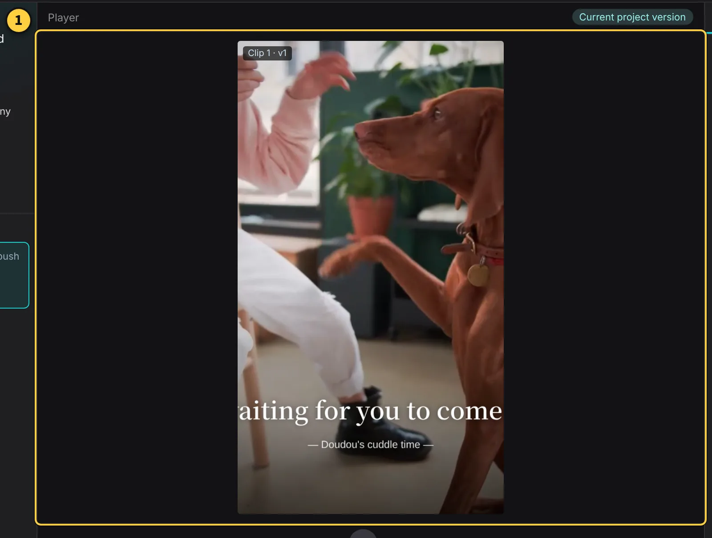
Animated poster: slow push and titles revealed in sequence
Can it be built?
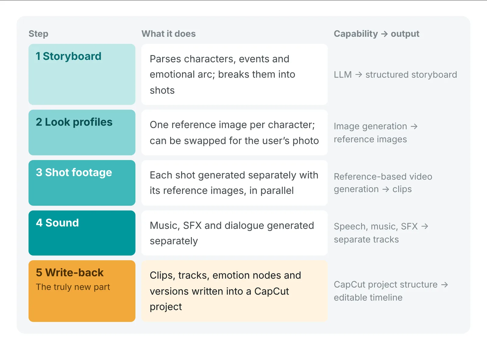
Technical pipeline: every step uses capabilities that already exist
Every step uses capabilities that already exist: an LLM for understanding and storyboards, image generation for reference images, reference-based video generation for clips, and speech, music and SFX generation for audio. The genuinely new part is step five: writing clips, tracks, emotion nodes and versions into an editable CapCut project and keeping them linked.
Emotion nodes don’t need a new model. They’re a metadata layer in the storyboard that links an intent to a range of clips; a redo turns the node plus the user’s sentence into per-clip generation parameters (tone, brightness, motion, camera speed, musical key, volume), only for clips the user hasn’t locked.
Known limits I’d design around in v1: faces drift most in group shots, profiles and backs; large motions distort hands and clothing; multi-speaker lip-sync is unreliable. So v1 caps main characters at three and shots at 15 seconds, and says so up front.
- 1Text entry, editable storyboard, generate-to-timeline, single-clip redo and versions
- 2Emotion nodes, batch redo, compare
- 3Photo entry, animated posters, one-tap publishing
How I’d know it works
I wouldn’t measure how many people pressed Generate, but how many edited a draft and published it.
| Question | Signal |
|---|---|
| Do people revise instead of starting over? | Share of sessions using local redo vs. full regeneration |
| Is the draft good enough to build on? | Drafts that get exported after edits |
| Are emotion nodes understood? | Emotion-node edits per project; candidates applied vs. discarded |
| Does it save effort? | Time and generation cost from first draft to export |
Before launch, I’d run concept tests with 5–8 target users, two or three per group, watching three things: whether they understand emotion nodes and marking without explanation, whether they choose local redo over full regeneration the first time something feels off, and whether “tell me first” makes them more willing to try.
See it work
The interactive prototype recreates the CapCut desktop editor with two complete stories: a text idea (“Beach Day in the Rain”) and a photo idea (“Doudou’s Day”). Every feature in this case study is clickable. The film walks through every feature in the order above, narrated.
A suggested three-minute path: start from text, choose Refine storyboard first, change one shot size, add a line of dialogue, accept AI’s suggested shot, generate; in the editor click the middle emotion beat, choose More upbeat at Strong, read the impact preview, apply; load the demo marks, redo four clips, compare clip 8, apply, then revert from the version history; back on the home screen, start from the sample photo and choose Bring it to life.
Unofficial concept. Not affiliated with ByteDance or CapCut. Stock footage; AI generation is simulated.
What I’d take forward
- The most useful reframe was moving from “generate better” to “edit better”.It changed the success metric from first-draft quality to how quickly someone reaches a version they’re happy with.
- Emotion is the layer users can say least but care about most.Making it an object on the timeline was the bridge between vague adjectives and concrete changes.
- What’s still untested:the personas and journey are based on public sources and product analysis, not interviews. The next step is the concept test above, especially whether emotion nodes are understood without onboarding.